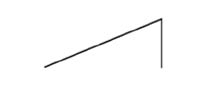
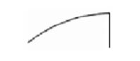

\1
XX. Bölüm
Kredi Çevrimi Kuramı ile İlgili Bir Alıştırma
Bu bölümde, belli türden bir kredi çevrimini alıp tüm detaylarıyla yürütmeye bakacağım. Günlük yaşantıdaki muhtelif zorlukları bertaraf etmek üzere başvurulan yalınlaştırıcı varsayımlardan dolayı, verdiğimiz örnek bir parça yapay olmaktadır; ayrıca daha önceki teze dair yeni bir şey eklememesi ve bir tasvirden ibaret olması nedeniyle, okurlar isterlerse bu bölümü atlayabilirlerse de, önceki bölümlerdeki yöntem ve fikirler, daha çok meseleyi daha az yoğunlukla ele almış olmaya nazaran, bu bölümde daha iyi tasvir edileceklerdir.
Verilen örnekte, başlangıçta bazı üretim faktörleri istihdam edilmiyor. Ayrıca, bankaların benimsediği ikrazat politikasının tüketim malları üretiminin artışına imkân verdiği ve bunun da istihdam edilmeyen tüm üretim faktörlerinin yavaş yavaş yeniden çalışmaya başlaması için kâfi, fakat ilave tasarrufların tazmin etmekte yetersiz kaldığı bir ilave işletme sermayesi stoğunun inşasıyla birlikte olduğu varsayılıyor. Dolayısıyla bu bölüm, bir daralmadan istihdam hacmindeki iyileşmeye giden ve fiyatların ve üretim maliyetlerinin dengeye ulaşmasına rağmen, işsizliğin karakterize ettiği bir çevrim boyunca, ücret-fiyat-istihdam yapısının iç mekaniğiyle ilgili bir denemedir.
I. Standart Durum
Şimdi esas mekanizmayı tarif edebilmek için (ki, göreceğimiz üzere genelleştirilmiş durumlara ciddi ölçüde benzer), zaruri olmayan komplikasyonlardan arındırarak, problemi sadeleştireceğiz. Sonradan kaldıracağımız başlangıç varsayımlarımız şunlardır:
Varsayım Alfa. Gelir mevduatına yapılan ilaveler dışındaki cari tasarrufların, ek istihdam hacminin sağlanması için gereken işletme sermayesine yapılan ilaveler dışındaki yeni yatırımın net miktarına eşit olduğu varsayılıyor. Böylece, ilave işletme sermayesi, gelir mevduatına yapılan ilaveler artı girişimcilerin kârları toplamına tam olarak karşılık geliyor.9
Varsayım Beta. Bankaların, finansal dolaşım miktarındaki çalkantıları karşılayan ve istihdam edilmeyen faktörlerin kararlı bir hızla –yani, istihdam edilmemiş son faktörün bir üretim dönemi geçince– istihdam edilmesini sağlayacak şekilde sınai dolaşıma yetecek kadar ilave para ürettiği varsayılıyor. Bu da, girişimcilerin, ücretleri varsayılan tedrici artış ölçüsünde ödemelerini ve A tipi ticari mevduatlarını artırmaları için, kârları dışındaki ve üstündeki tüm ihtiyaçlarının bankalarca sağlanması demektir.
Varsayım Gama. Artan istihdamın tümüyle tüketim malları üretimine gittiği ve akışkan sermaye stoklarının, varsa, sabit olduğu varsayılıyor.
Varsayım Delta. Gelir enflasyonunun olmadığı, böylece üretim faktörlerinin verimlilik ücret hadlerininin baştan sona değişmeden kaldığı, yani parasal üretim maliyetlerinin sabit olduğu varsayılıyor.
Varsayım Epsilon. Üretim süreci zamanının bütün mallar için aynı ve sürecin de durağan olduğu varsayılıyor.
Varsayım Zeta. Ücretlerin, burada “hafta” olarak adlandıracağımız düzenli aralıkların sonunda, yani bir hafta boyunca yapılan işin karşılığında ödendiği varsayılıyor. Bu şekilde, ödenen tutarlar ancak sonraki hafta harcanabilecektir. Herhangi bir hafta boyunca harcamalar durağan bir haddedir, yani herhangi bir haftaya ait harcama, önceki haftanın geliriyle yapılacaktır. Dolayısıyla, haftalık işin karşılığında elde edilen gelir, o haftanın harcamasını etkileyecek şekilde ele geçmez. Ayrıca, tüketicilerin hafta sonunda bir sonraki haftaya taşıdıkları gelir mevduatı miktarının da, cari haftada elde ettiği gelirleri artı önceki hafta gelirlerinin sabit bir oranından oluştuğu varsayılıyor.
Parasal gelirler değişmiyorsa yahut sabit bir hızla değişiyorsa, yukarıdaki varsayımlar, her hafta sonunda naklolunan gelir mevduatının, o hafta gelirinin sabit bir payı olduğu ve gelir mevduatı tedavül hızının da değişmediği anlamına gelir. Fakat parasal gelirler değişiyorken, durum o kadar basit değildir. Zira, yine önceki gibi, k1 terimi gelir mevduatı tedavül hızının tersi, w1 ve w2 terimleri ardışık iki haftanın gelirleri ve m.w1 + w2 ifadesi ikinci haftanın sonunda nakledilen toplam ise (yukarıdaki varsayım gereğince), bu durumda üçüncü haftanın harcaması w2 + m(w1 – w2) olurken, gelir mevduatlarının ortalama düzeyi m.w1 + w2 – (1/2) {w2 + m(w1 – w2)} olur. Bu, hafta ortası balansıdır, yani (1/2){w2 + m(w1 + w2)}. Dolayısıyla
k1 = (1/2).(w2 + m[w1 + w2])/(w2 + m[w1 – w2])
olur ki, sadece ücretlerin kararlı olması yahut düzenli (geometrik) bir hızla yükseliyor olması hâlinde, sabit kalır.
Varsayım Eta. Geçmişte yapılan hatalar her ne olursa olsun, ilgili kişilerin kredi çevriminin daha sonraki güzergâhını sağlıklı bir şekilde öngördükleri varsayılır.
Üretim süreci, bu zaman birimleri yahut “hafta” cinsinden 2r – 1 uzunlukta olsun (epsilon varsayımına uygun olarak uzunluğu bir örnektir ve durağan yoğunluktadır).
Burada
a = birim zamanda para cinsinden kazanç akımı;
t = tüketim harcamasının kazançlardaki payı ve tabii
–alfa varsayımı uyarınca– tüketime uygun formda
doğan çıktı payı;
ayrıca başlangıçta
a.r = işletme sermayesinin üretim maliyeti;10
t.a = tüketim akımı.
Öte yandan p de tüketime müsait malların fiyat düzeyini göstersin.
Gayrı faal üretim faktörlerinin faal durumdakilere oranının x olduğunu, istihdamı kapasitesine yükseltecek bir hareket sonucunda işletme sermayesinin de x oranında büyüdüğünü kabul ediyoruz. Ayrıca beta varsayımına uygun olarak, bunun tek sıçramayla değil fakat kararlı eşit artışlarla yapıldığını, a/(2r – 1) olan haftalık işleme düzeneğine giriş haddinin x oranında artarak [a/(2r – 1)].(1 + x) düzeyinde devam ettiğini varsayıyoruz. Böylece (2r – 1) hafta sonra kazançlar a.(1 + x) düzeyine çıkacak ve ondan sonra da bu durağan düzeyde kalmaya devam edecektir.
Yani kazançlar ilk haftada a[1 + x/(2r – 1)], ikinci haftada a[1 + 2x/(2r – 1)], üçüncü haftada a[1 + 3x/(2r – 1)] olacak ve böyle böyle (2r – 1)inci haftada a(1 + x) olduklarında istihdam da tam kapasiteye erişecektir.
Kazançlardaki artış, fiyat düzeyini ilk zaman diliminde etkilemeyecektir. Çünkü varsayım gereği ücretler hafta sonunda ödenmektedir. Yani ilave kazançlar ikinci haftaya kadar piyasaya satın alma gücü olarak girmeyecektir. Bununla birlikte önceki reel müsait çıktıyla aynı miktara karşılık gelen satın alma gücü ikinci hafta boyunca a[t + x(1 – m)/(2r – 1)] düzeyine çıkacak ve gelirdeki artış ax/(2r – 1) olduğu, axm/(2r – 1) de bunun naklolunan ve harcanmayan payı olduğu için zeta varsayımı karşılanacaktır.11 Bunun sonucu, fiyat düzeyinin p[1 + x(1 – m)/(t[2r – 1])] olacak şekilde yükselmesidir.
Böylece tüketiciler parasal gelirlerinden x(1 – m)/(t[2r – 1]) oranında bir satın alma gücü yitirir. Bu arada ele alınan zaman diliminde, malları uygun formda ortaya çıkan girişimciler de p yerine p[1 + x(1 – m)/(t[2r – 1])] fiyatından yararlanarak aynı miktarda kâr elde ederler.
İkinci haftaya ait kazanç hacmi a[1 + 2x/(2r – 1)] ve üçüncü haftanın yeni fiyat düzeyi de, deminki muhakemeyle p[1 + x(2 – m)/(t[2r – 1])] olur. Bu süreç, (2r – 1) hafta boyunca devam eder ve bu sürenin sonunda kazanç hacmi a(1 + x), (2r – 1)inci zaman aralığındaki fiyat düzeyi p[1 + x(2r – 1 – m)/(t[2r – 1])] olur ki o da –eğer (2r – 1) ciddi bir hafta sayısını temsil ediyorsa– p(1 + x/t) ile pratik olarak aynıdır. Buradan da, r terimi, m terimine kıyasla mutlak ve göreli olarak büyük ise,12 fiyat yükselişinin, tüketicilerin gelir mevduatlarının parasal gelirlerine oranını sürdürmeleriyle çok az geciktirilebileceği anlaşılır. Fiyat yükselişindeki bu gecikmenin bir kısmı gelir elde edenlere 1 hafta geç ödeme yapılmasından, bir kısmı da bu kişilerin artan harcanmamış gelirlerinin, parasal gelirleriyle gelir mevduatları arasındaki ilişkiyi koruyacak şekilde bir haftadan diğerine naklinden ileri gelir.
Gelir mevduatı hacmindeki artış, bu zaman zarfında a.x[1 + ([2r – 2]/[2r – 1]).m] kadar olur (yani [2r – 1]inci haftanın sonuna aktarılır). Bu arada, yeni üretim hacminden sorumlu olanlar da dâhil tüketiciler bütününün oluşturduğu kütlenin tüketimi, haftalık a.t haddinde olacak şekilde öncekiyle aynı miktardadır. Reel ücret hadleri bu süre içinde düzenli bir şekilde düşüyor olacağı için, yeni üretim hacminden sorumlu olanlar hariç eski üreticiler tüketimlerini kısmış olacak, yeni üreticiler ise onlarla aynı miktarda tüketimlerini artırmış olacaktır.13 İşte bu yeni üreticiler bütününün kazançları topluca a.x.r kadar olurken, gelir mevduatları a.x[1 + ([2r – 2]/[2r – 1]).m] olacaktır. Ayrıca girişimcilerin hesabına yazılan kârlar da a.x{r – [1 + ([2r – 2]/[2r – 1]).m]} kadar olur; çünkü bu, yatırımın değerinin tasarruf hacmini aşan kısmını temsil eder. Aşağıda (dipnot 6) göreceğimiz gibi, girişimciler (2r)inci haftadaki fazlanın küçükçe bir parçasını, nihai toplam fazlanın a.x{r – [1 + m]} olmasını sağlamak üzere gözden çıkaracaklardır.
İşletme sermayesi, çıktı ve istihdam, fiyatlardaki yükseliş ile birlikte, varsayımlarımızla uyumlu bir şekilde en yüksek düzeylerindedir. Bu arada parasal ücret hadleri de eski düzeylerini korumaktadır.
Genişlemenin zirvesi olan bu noktada fiyatlar maksimuma erişmiştir. Üretim faktörlerinde emilmesi gereken işsizlik oranı, başlangıç itibarıyla yüzde 10 ve t de yüzde 90 ise, fiyatlar yüzde 11 civarında yükselmiş olacaktır. Bu noktada oyunun ikinci perdesi, bilinen adıyla söylersek, daralma başlar.
İstihdamdaki canlanmanın başından sayarak (2r)inci zaman aralığında, müsait çıktının meydana geliş haddi a.t değil a.(t + x) olacak ve ondan sonra da kararlı bir şekilde bu daha yüksek düzeyde seyredecektir. Dolayısıyla fiyat düzeyi piyasadaki müsait mal miktarının artış oranı olan x/t ölçüsünde azalmış olur. Yani, (2r)inci dönemdeki harcamanın a.(t + x) ve pazara çıkan malların da a./[p(t + x)] olması nedeniyle, fiyat düzeyi bir anda başlangıçtaki p düzeyine iner.14
Dikkat edilirse, çıktı akımındaki artış, fiyatlardaki düşüşü dengelemektedir. Böylece gelir mevduatları da, artmış durumdaki k1.a(1 + x) büyüklükleriyle, yeni durumda hâlâ dengededirler.
Mevcut varsayımlarımız çerçevesinde, daralma sadece fiyat küçülmesinden ibarettir ve istihdam hacmine bir tepkisi yoktur. Yeni durum, üretimin genişlemesinden öncekiyle aynı fiyat ve ücret düzeyleri dengesindedir; fakat işletme sermayesi, üretim ve istihdam, hep birlikte x oranında artmış hâldedirler.
II. Sekiz Epilog
Varsayımlarımızdaki katılıkları törpülemeye girişmeden, büyük kısmı önceki bölümlerde tespit edilen ve şimdiki konuya referansı itibarıyla tekrarlamaya değer olan noktalara değineceğiz.
(1) Fiyatları kararlı tutarak ve parasal ücretleri de fiyatların farazi artışıyla, yukarıdaki gibi, aynı oranda gitgide küçültmek suretiyle, yine aynı sonuca varılabilirdi. Ancak bu durumda servetteki artışın çoğu, üretime giren yeni girişimcilere ve daha azı ise üretim artışı başladığında malları üretilmekte olanlara giderdi, ne var ki bu ihtimal rekabetçi koşullarda ortaya çıkmaz.
(2) Aynı sonuca tüketicilerden girişimcilere herhangi bir servet transferi olmaksızın da varılabilirdi. Bunun şartı, üretim faktörlerinin, parasal ücretlerinin bir kısmını ileride, sadece mevcut çıktı karşılığında ve yeni tasarrufun başka kaynaklardan sağlanabilmesi hâlinde ve nispetinde almayı kabul etmeleridir. Örneğin ücret aralığı r = 1 olacak şekilde üretim aralığına eşit ise, yahut nakledilen tutar her ücret aralığında uygun miktarda artmış ise, veya tasarruflar başka bir yolla yeterince yükselmişse, fiyat düzeyinde yükselme olmayacaktır.
(3) Çevrim öncesindeki banka mudileri kredi çevrimi boyunca sıkı dururlarsa, kazanç yahut kayıpla karşılaşmazlar; bankadaki mevduatlarının son değeri baştakiyle aynı olur. İşletme sermayesindeki büyüme, ki varsayımlarda büyük kısmı girişimcilere aittir, tamamıyla satın alma gücü düşen cari gelirler pahasınadır ve mevduata hiçbir şekilde dokunmaz.
(4) Üreticiler, kitleyi tümüyle istihdam edecek şekilde işletme sermayesi fonunu artırma yararına, birim üretim çabası karşılığında daha az reel gelire razı olmak durumunda kalırken, servette meydana gelen nihai artışın neredeyse tamamı havadan bir şekilde girişimcilere gider.
Ancak, eğer gözlediğimiz toplumun tamamen sosyalizasyona geçtiğini, yani Devletin ücretleri sabitlediğini, tasarruf hacmini tayin ettiğini ve tek girişimci olduğunu farz ediyor olsaydık, işletme sermayesi fonu sürecine eşlik eden bir adaletsizlik meselesi de söz konusu olmazdı. Çünkü bu durumda, ücretlerin reel düzeyinde üretim faktörlerinin tam istihdamına kaçınılmaz bir şekilde eşlik edecek olan geçici küçülme (başka bir maksatla yapılacak tasarruflar için de aynı şey olurdu), topluluğun bütününe gidecek bir servet artışını ifade eder.
(5) Ayrıca, girişimciler kesimine giden servet artışı, asla üretim hacmini artırma işine katılan girişimcilere değil (çünkü bunlar zamanı geldiğinde çıktılarını ancak normal fiyattan satabileceklerdir), esas olarak, istihdamın artmaya başladığı sırada işlenen malların sahibi olan girişimcilere gidecektir. Bir diğer deyişle, sürecin uzunluğuna uygun vadelenmiş fiyat, hemen teslim (spot) fiyata kıyasla bir gerileme (backwardation) kaydederek normal kalmaya devam edecek, yani spot fiyat, prim içerecek şekilde vadeli fiyatın üzerine çıkmış olacaktır.
(6) Ham maddeler toptan fiyatlarının indeks değeri ile büyük ölçüde aynı olan işletme sermayesinin fiyat düzeyi p’ öngörüde kusur olmadığı kabülüyle, müsait çıktının, yani akışkan tüketim mallarının p fiyat düzeyinden hemen daha fazla yükselir. Zira, kredi çevriminin başlangıcından önce üretim sürecine giren mallardan oluşan işletme sermayesinin değeri yükselmezken, bu mallar, tamamlanmaları ölçüsünde, sadece eski fiyattan satılacaklardır. Öte yandan çevrim başladığında kısmen tamamlanmış durumda olan henüz namüsait mallardan oluşan işletme sermayesinin değeri, sürecin sona ereceği tarihteki müsait çıktıya ait daha yüksek bir fiyat bekleyişini yansıtacaktır, yani ham ve yarı-mamul maddelerin fiyat düzeyi p’ , öngörünün hatasız olduğu kabulüyle, p düzeyine göre ortalama olarak daha hızlı yükselecek ve p ile p(1 + x/t) arasında bir düzeye çıkacaktır.
(7) Tezde, üretim faktörlerinin istihdam edildikleri durumda işsiz oldukları duruma nazaran daha büyük parasal gelir elde ettikleri ve o gelire uygun tükettikleri varsayılıyor; böylece sürecin uzunluğuna eşit bir zamanda, istihdam hacmindeki bir artış, başlangıçta işsiz olan birimler için daha fazla gelir demek olurken, önceden istihdam edilmekte olanlar için daha az reel gelir demek oluyor. Durum böyle değilse, (örneğin işsizlik ödeneği [benefit] sonucunda) işletme sermayesinde gereken artış kısmen daha önce işsizlerin gelirlerinin ödendiği kaynaktan karşılanabilir.15 Bu, tezin özüne dokunmaz, ancak zorunlu fiyat artışının uygun ölçüde azaldığını anlatır. Mesela işsizlik ödemesi, çalışana ödenenin yarısı ise, yukarıdaki denklemler, x yerine x/2 konulması hâlinde geçerli olacaktır. Ayrıca ele alınan toplumda üretim faktörleri, istihdam edilirken de edilmezken de (“İşte veya Bakımda”) tamı tamına aynı ücret haddini alıyorlarsa, bu durumda fiyatlarda yükseliş olmayacağı açıktır. Öte yandan, daha önce işsizlik maaşı olarak ve ardından da işletme sermayesini ikmal amacıyla kullanılan fonlar, tüketimi yahut yatırımı başka bir yönde çoğaltmak için kullanılmadıkça, böyle hâllerde fiyatlar üretim döneminin sonunda başlangıç düzeyinin altına düşerler.
(8) Daha önce değindiğimiz ama yinelemeye değen son derece önemli paradoksal bir olgu var. Şu ya da bu dönemde topluluğun servet stoğuna yapılan ilave, tek tek bireyler kütlesinin parasal gelirlerinin ne kadarını tasarruf edeceklerine dair kararlara değil, esas olarak girişimcilerin ve finansörlerin o döneme ait sabit sermaye yahut işletme sermayesi şeklindeki çıktıya dair kararlarına bağlıdır. Yeni yatırımın üretim maliyeti, bireylerin parasal gelirlerinden tasarruf ettikleri miktardan farklı olduğu zaman, mutlaka birtakım fiyat değişmeleri olmak durumundadır. Eğer örnekteki türden bir enflasyon söz konusu ise, hiç kimse kendi isteğiyle daha fazla tasarruf etmiyorsa bile topluluğun serveti artar, yükselen fiyatlar nedeniyle bireylerin tüketimi azalır. Öte yandan, deflasyon varken bireyler “tasarruf”a yönelebilirler (ki aslında keyiflerine göre bunu yapmaya güçleri vardır); tasarruf miktarları itibarıyla bireysel zenginlikleri artsa da milli servete herhangi bir net ilave söz konusu olmaz, zira bir kesim girişimcinin servet kaybı “tasarruf edenlerin” servet artışıyla, “tasarruf edenlerin” vazgeçtiği tüketim de tüketiciler genelinin artan tüketimi ile dengelenir.
Dolayısıyla, kazanç elde eden ve tüketen halkın bireyler olarak niyeti, basiret olsun yahut olmasın, tüketimlerinin toplam miktarında şu ya da bu yönde en küçük bir fiili fark yaratmayacaktır. Zira, cari tüketim kapsamında bireylerin tüketimi azaltmaya yahut sürdürmeye yönelik niyetleri, toplam cari tüketim üzerindeki bütünsel etkisi yönünden, fiyatların mukabil inişi yahut çıkışı ile daima bertaraf olacaktır. Yani, toplumun tek tek üyelerinin basiretli yahut basiretsiz olması, nihai olarak halkın toplam tüketiminde değil, fakat fiyat düzeyinde ve topluluğun namüsait servet artışını elde edenlerin kimler olduğunda ortaya çıkar. Özetle, böyle durumlarda “basiret” halk açısından ucuz ve yararlıdır, çünkü bu, onlara, toplam tüketimlerini düşürmeksizin, başka her durumda girişimcilere akacak olan serveti bahşeder.
III. Genelleştirilmiş Durum
Şimdi de, tezimizi sadeleştirdiğimizi varsaydığımız sınırlamalardan bazılarını kaldırmaya girişeceğiz.
(1) Varsayım Alfa
Eğer cari tasarruflar burada varsayılandan daha fazlaysa, fiyatların yükselişi buna uygun şekilde daha az olur. Çünkü, tüketim maksatlı satın almalardaki artış, eğer cari tasarruflar az ise ona uygun olarak, hafta başına yukarıda varsayılan ax/(2r – 1) miktarından daha az olacaktır. Fakat bu durum tezin özünü değiştirmez; sadece hesaplamalarda ax/(2r – 1) yerine ondan daha küçük veya büyük bir terim koymamızı gerektirir.
Benzer şekilde, işletme sermayesine ilave dışında, net yeni yatırımın tasarrufta buna tekabül eden bir değişme olmadan azalması yahut artması hâlinde, fiyatlar vb. üzerindeki etkiler, yukarıda belirtildiği üzere, nitelikçe değişmeksizin hafifleyecek yahut ağırlaşacaktır. Örneğin, işletme sermayesindeki büyümenin dış dengenin azalmasıyla karşılanabilir olması ölçüsünde, hafifletici etkiler bu başlık altında yer alacaktır.
Özet olarak, kredi çevrimi olgularının şiddeti, tasarrufla yatırım arasındaki fiilî dengesizliğin alfa varsayımındakinden fazla yahut eksik kalmasına göre, standart duruma kıyasla, çok veya az olur.
Fakat alfa varsayımının yerine gelmemesi sonucunda çevrimin ilerleyişindeki asıl farklılık, çevrimin bir ve sadece o üretim dönemince devam etmiyor olmasıdır; çevrim öyle girift bir hâle gelir ki gerçek seyrinin tasviri, ancak gerçek karakterine dair bir varsayım yapmakla mümkündür.
Alfa varsayımının yerine gelmeyişine dair belli bir duruma bakmak üzere, girişimcilerin kişisel tüketime yönelik harcamalarını önceki “hafta”nın havadan kârlarının bütünü kadar büyüttüklerini varsayalım. Burada girişimcilerin “tasarrufları” yukarıda tanımlandığı gibi negatiftir. Yeni satın alma gücü tüketiciye, tıpkı önceki gibi, yine bir hafta sonra ulaşacaktır. Böylece ilk ve ikinci haftalardaki durumlar daha öncekiyle aynı olacaktır. Ancak, izleyen her hafta içinde mamul mallara yönelik satın alma gücü olarak piyasaya sadece yeni istihdamın doğurduğu harcama artışı değil, bir de girişimcilerin önceki haftaya ait havadan kârlarının eşdeğeri gelecektir.16 Böylece üçüncü hafta fiyatlar
p(1 + x(2 – m)/[t(2r – 1)] + x(1 – m)/[t(2r – 1)]) ’e
yani p(1 + x(3 – 2m)/[t(2r – 1)]) ’e yükselecek, dördüncü hafta
p(1 + x(3 – m)/[t(2r – 1)] + x(3 – 2m)/[t(2r – 1)])
yani p(1 + x(6 – 3m)/[t(2r – 1)]) olacak ve (q)uncu haftada fiyatlar standart durumdaki
p(1 + (q – 1 – m)x/[t(2r – 1)])
ifadesinin yerine (kolay cebrinden de görüldüğü üzere)17
p(1 + [(q – 1m)(q – 2m)/2]. x/[t(2r – 1)])
ifadesi ile belirlenene kadar bu şekilde devam edecek ve nihayet (2r – 1)inci haftada
p{1 + (r – 1)(2r – 1 – 2m).x/[t(2r – 1)]}
olacaktır.
Eğer, ara bir durum olarak, havadan kârları elde eden eski girişimcilerin kendi havadan kârlarının tümünü değil de bir kısmını alıkoyduğunu varsayarsak, bu durumda fiyatların yükselişi, yukarıda karşılaştırılan iki formülün sonuçları arasında bir değer alır. Yani banka kredisinin artışı ve bunun sonucunda perakende fiyatların izleyen dönemlerdeki yükselişi, standart duruma nazaran daha büyük olmak durumundadır, ne kadar büyük olduğu, havadan kârların ne kadar tüketildiğine bağlıdır; ama bunun dışındaki durumlar teze halel getirmez. Mevcut tüketicilerin tüketimindeki mecburi düşüş, yeni üreticilerin tüketimini ve kâr elde edenlerin yeni tüketimini karşılamaya yeterli olmalı, öte yandan parasal gelirlerin reel değerindeki düşüş de orantılı olarak daha büyük olmalıdır. Bu sebepten dolayı yüzde 10’luk bir işsizliğin üretimde emilmesi, fiyat düzeyinde standart durumun maksimum şartı olan yüzde 11’den çok daha fazla artış yapabilecek bir kapasiteye sahiptir. Örneğin x , yüzde 10; t , yüzde 90; m , 1; 2r de 50 ise, fiyatlar standart durumda 100’den 110.6’ya yükselirken, girişimcilerin havadan kârlarını tükettikleri durumda 100’den 350’ye yükselir. Bu sonuç, tüketicilerin bir bütün olarak başarmaları imkânsız olanı yapmaya çalışmaları, yani, tasarruflarından çekerek birim çıktı başına eski tüketim haddini sürdürmek istemeleri hâlinde de aynıdır.
Öte yandan kredi çevrimi olgusunun –gelir mevduatlarındaki artış dışında– tasarruf artışını uyarabileceği fakat bu artışın kendiliğinden ortaya çıkmayacağı bir durum söz konusudur. Paranın değeri çevrimin yükseliş evresinde düşeceği, fakat sonra yine eski düzeyine çıkacağı için, tüketim dönemini erteleyen ve bunun karşılığını tasarruf mevduatlarına aktaran birinin sağlayabileceği kazanç, normal parasal faiz haddinden ibaret kalmayacak, ek olarak paranın müstakbel değerindeki artışın yıllık yüzdesi şeklinde hesaplanan bir karşılık da içerecektir. Yani pratikte kişinin tüketiminin zaman içindeki dağılımını değiştirecek ciddi bir güdü mümkündür. Bu uyaran, fiyat yükselişinin ilk evrelerinde küçük olacaktır. Çünkü hem fiyatlar o kadar yükselmemiş durumdadır, hem de fiyatlardaki müstakbel düşüş zamanı henüz uzaktır. Oysa müstakbel düşüşün hem büyük, hem de yakın olduğu sonraki dönemlerde, bu uyaran ciddiyet kazanacaktır. Böylece, öngörüler doğruyken, bu faktörün fiyat eğrisinin tepesindeki hörgücü gidermesi mümkündür.
(2) Varsayım Beta
Bankacılık sisteminin istihdamdaki ve kazançlar toplamındaki artışı varsayılandan hızlı ya da yavaş bir oranda kolaylaştırması hâlinde, genel tasvire uymayan, ancak şu ya da bu biçimde tasvir edilmesinde zorluk bulunmayan çeşitli düzensizlikler devreye girer.
(3) Varsayım Gama
Mevcut gelirin tümünün, üretildiği gibi harcanıp tüketildiğini, akışkan tüketim sermayesi hacminin (varsa) sabit kaldığını varsaydık. Bu, hazır perakende malların gömülenemediği, bunlara ait bir başlangıç stoğunun olmadığı anlamına gelir. Bu varsayım, müsait çıktının bozulabilir ve o nedenle gömülenemez olması hâlinde ve ölçüsünde alabildiğine geçerli olacaktır. Fakat müsait çıktı bozulabilir olmadığı ölçüde, fiyat düzeyine dair yükselme bekleyişi –gömülemenin maliyet haddi fiyat düzeyinin beklenen yükseliş haddini aşmadığı sürece– gömülemeyi uyaracak ve fiyatların önceki düşük düzeyine göre döneceği beklentisi ise stokların eritilmesine yol açacaktır. Gömüleme olmadığı varsayımının kaldırılması bu yüzden önemlidir.
Fiyat düzeyinin seyrinin hatasızca öngörüldüğü kabulüyle, yeni banka kredisinin belirli bir payı işletme sermayesini ikmal etmekte değil, akışkan gömüleri artırmakta kullanılacak ve sonuç olarak fiyat düzeyinin başlangıçtaki yükselişi başka bir duruma nazaran daha fazla olacaktır, çünkü akışkanlığı daha düşük mallar, tüketime konu olacaktır. Eğer gömülemenin maliyeti yoksa, fiyat düzeyi, maksimumuna (standart durumdaki [2r – 1] aralığı yerine) ilk zaman aralığında çıkacak ve o maksimum da (2r – 1) adet zaman aralığı boyunca değişmeden kalacak fiyat olacaktır. Bu fiyat, başlangıç fiyat düzeyi ile gömüleme olmadığı şeklindeki eski hipotezimize dayalı maksimum fiyat düzeyi arasında yer alır ki takriben p[1 + x/(2t)] olur.18 Böyle bir durumda gömü hacmi, (r)inci zaman aralığına kadar artmaya devam edip, sonra gömülerin (2r – 1)inci haftada tamamen emilmesine kadar azalacak, fiyatlar ise, yine daha önce olduğu gibi, ancak bundan sonra yeniden eski p düzeyine düşecektir.
Gömüleme olanağının, (maliyetsiz olması hâlinde) fiyat dalgalanmasının genliğini yarıya indirmesi ve tüketimin zaman içindeki dağılımını daha iyi hâle getirmesi nedeniyle, genel yarar sağlayacağı fark edilecektir. Gömülemenin şart koştuğumuz istihdam artışı oranıyla birlikte uygulanabilir olması için, para arzını ilk haftalarda daha yüksek, sonraki haftalarda ise daha düşük derecelerde artırmak zorunlu olacaktır; çünkü finanse edilmesi gereken kârlar ilk evrelerde artıp sonradan azalacaktır.
Yukarıdaki durum kredi çevriminin hatasız öngörülmesi hâlinde ortaya çıkar. Oysa pratikte, başlangıçtaki fiyat artışının, gömülemeyi uyarmak şöyle dursun, söz konusu gömülerden yahut normal yedeklerden hazır durumdaki ilave miktarları piyasaya çıkartması muhtemeldir. Fiyat artışı, ancak belli bir süre devam etmesi ve bu yüzden fiyatlardaki artışın uzayıp gitmesine dair yanlış beklentiler doğurması hâlinde gömülemeyi uyarabilir. Bu durumda fiyatlardaki artış standart durumdakine nazaran ilk önce daha az, ama sonraları daha büyük olacak ve ilave miktarların piyasaya girdiği (2r)inci haftada hesap hataları dolayısıyla hâlâ gömücülerin ellerinde olacak stoklar nedeniyle, ortaya çıkan yıkım, fiyatları ilk anda normal p düzeyinin altına düşürecektir.
Bunun hemen ardından da normal şartlarda gömülemenin maliyeti olduğu gerçeğini hesaba katmamız gerekiyor. Eğer bu maliyet, gömüleme yokken fiyatların yükseleceği farz edilen hadden büyükse, o zaman gömüleme de olmayacaktır. Yani herhangi bir zaman aralığı için gömüleme maliyeti px/[t(2r – 1)] teriminden büyük ise gömüleme yoktur. Öte yandan beher zaman aralığı için gömüleme maliyetinin bu terimden küçük olması hâlinde gömüleme ortaya çıkar. Bu durumda fiyatlar, standart durumdakine nazaran, gömülemenin başlamasını izleyen ilk zamanlarda daha yüksek, sonraki zamanlarda daha düşük olur. Fakat, yine önceki gibi, (2r)inci dönemden önce aniden maksimum fiyat düzeyine ulaşılır ve (2r)inci dönemde yine hızla p fiyat düzeyine inilir.
(4) Varsayım Delta
Standart durumda üretim faktörlerine ait kazanç hadlerinin çevrim süresince parasal olarak aynı kalacağını, yani mal enflasyonuna gelir enflasyonun eşlik etmeyeceğini varsaymıştık. Bu varsayımın yerine gelmemesi hâlinde, mal enflasyonu nedeniyle tüketim fiyat düzeyinde, tam gelir enflasyonunun ortaya çıktığı dönemde ve tam da o ölçüde, ek bir artış meydana gelecektir.
(5) Varsayım Epsilon
Şimdi de sürecin uzunluğunun bütün mallar için aynı olduğu varsayımını bir kenara atalım. Bu durumda fiyat düzeyi, bazıları maksimum düzeylerine erişmemiş, bazıları da o düzeyi geçmiş mal fiyatlarından oluşacaktır. Dolayısıyla bileşik fiyat düzeyi eğrisi de Şekil 1’deki normal şeklini alacak
Şekil 1
ve Şekil 2’deki gibi, gömülemenin olmadığı standart durumun dimdik düşen düz çizgisinden

Şekil 2
yahut Şekil 3’teki, gömülemenin olduğu, önce hızlıca yükselip, sonra aniden düşen düz çizgiden farklı olacaktır.

Şekil 3
Çünkü Şekil 1 durumunda, daha çok sayıda mal fiyatı tepe noktasına vardıkça ve düştükçe, bileşik fiyat düzeyinin artış haddi, fiyatı düşen malların sayısının henüz fiyatı artmakta olanların sayısını aşacağı bir noktaya kadar gitgide yavaşlayacaktır.
Ayrıca, hatasız öngörü varsayımını korur, fakat sürecin uzunluğunun bir örnek olduğu varsayımını gevşetirsek, önceki sonuçlarımızı yeniden nitelendirmemiz söz konsudur. Çünkü kısa üretim periyoduna sahip bir malın girdi oranı başka her şeyle aynı oranda artarsa, bu malın fiyatı, ona uygun satın alma gücü henüz onun çıktısı nispetinde artmış olmayacağı için, kendi üretim döneminin sonunda normalin altına düşecektir. Bundan çıkacak sonuç, üretim dönemi görece kısa olan malların girdi oranlarının diğerlerininkine nazaran bir parça daha yavaş artması gerektiğidir. Öte yandan, yukarıdakini kısmen dengeleyecek olan bir unsur, üretim dönemi uzun olan kalemlerden kısa olanlara doğru bir tüketim sapması olup, ikinci gruptakilerin düşük fiyat avantajından yararlanma amacından kaynaklanır.
(6) Varsayım Zeta
Bu varsayımın herhangi bir şekilde terk edilmesi, alfa varsayımına göre zaten ele alınmış olan bir tasarruf haddi değişikliğiyle aynı sonucu verir.
(7) Varsayım Eta
Pratikte, kredi çevrimlerinin standart durumdakine kıyasla yapısal olarak güçlü bir “aşırıya kaçma” eğilimi vardır.
Buraya kadar öngörünün doğru olduğunu kabul edip, eksik öngörünün sonuçlarına dair geçici nitelikte birkaç imada bulunduk. Oysa gerçekte öngörünün eksik olması kesindir ve mevcut bilgisizlik içinde belli bir yönde sapma göstermesi çok muhtemeldir. Çünkü, girişimcilerin, mevcut zihniyetleri itibarıyla, yeni girdinin işlem sürecine katılma haddine dair kararlarının tayininde, bitmiş mallara ait bugün ne olduğu belli olan spot fiyat, üretim sürecinin sonuna ait ne olacağı hayli belirsiz müstakbel fiyattan çok daha etkilidir; oysa etkili olması gereken hiç de ilk fiyat değil, tamamıyla ikincisidir. Neticede spot fiyatlar yükselirken, özellikle de altı aydır kararlı bir şekilde yükselmekte iseler, girdi haddi çabucak hızlanır, eğer o süre içinde düşmekteyseler de, bu had –izleyen bariz sonuçlarıyla birlikte– çabucak hız kaybeder.
Kaldı ki kararlarında bağımsız, birbirinden gizli saklı davranan ve büyümüş bir girdi haddi ile karşı karşıya kalan bir grup girişimcinin olduğu bir durumda, bu girişimcilerden hiçbirinin, çıktı haddi artışını ve neticede bunun bir üretim dönemi boyunca fiyatlardaki karşılığını sağlıklı bir şekilde öngörmesi mümkün değildir.
Sürdürdüğümüz tezin uzantıları ve yönsemeleri o kadar çoktur ki genişletilmesine, yeniden nitelendirilmesine ve genelleştirilmesine sayfalar dolusu devam edilebilir. Yine de tez, herhâlde, burada örneklenen genel düşünce sistemine giren bir okurun, tezi ilginç bulacağı durumlara uygulamasına yetecek bir noktaya getirilmiştir.
9 Burada zımnen, girişimcilerin dönemin başında kâr yahut zarar etmedikleri varsayılıyor. Ancak bu varsayım zorunlu değildir; yokluğu halinde tezi uyarlamak kolaydır.
10 Çünkü a/(2r – 1) + 2a/(2r – 1) + 3a/(2r – 1) + ... + 2(r – 1)a/(2r – 1) = a.r
11 Eğer m teriminin değeri 1’den büyük ise, yani naklolunan miktar haftalık gelirden büyükse, uzunca bir zaman geçmedikten sonra bu varsayımın gerçekleşmesi pek olası değildir. Zira bu durumda gelir artarken muhtemelen naklolunan miktar tedricen aynı oranda artacak, böylece gelir mevduatı tedavül hızı da geçici olarak normal değerinin gerisinde kalacaktır.
12 r teriminin muhtemel büyüklüğü için bakınız II. Cilt, XXVIII. Bölüm.
13 İşsizlik istihkakları vb. gibi ihtiyatlar yukarıdaki tezin kapsamında değildir. Bunların sonuçlarına az ileride s. 291-292’de değinilecektir.
14 Bu kesin doğru değildir. Zira (2r)inci dönemin sonundaki nakledilen tutar, yani a(1 + x)(1 + m), (2r – 1)inci dönemin sonundakinden, yani
a(1 + m) + a.x[1 + ([2r – 2]/[2r – 1])m]
ifadesinin temsil ettiğinden daha büyük olacaktır ve böylece nakledilen tutara yapılan bu ilâve, (2r)inci dönemde fiyatların inişini geçici olarak p düzeyinin altına getirecektir; fiyatlar (2r + 1)inci döneme kadar p düzeyinde durulmayacaktır.
15 İşsizlik ödemesi sanayi kesiminin üstüne kalıyorsa, istihdam edilen faktör başına ücretin değişmediği varsayımıyla, istihdam artışının sonucu verimlilik ücretlerini azaltmak olur. Buna karşılık işsizlerin harcamasını negatif tasarruf olarak düşünmek de mümkündür.
16 Alıcıların havadan kârları düzenli gelirleri içinde görmedikleri ve böylece gelir mevduatlarından naklettiklerini onlarla orantılı olarak artırmadıkları varsayılmaktadır.
17 Çünkü eğer (q)uncu dönemin fiyatları
p(1 + sq x/[t(2r – 1)]) ise,
sq – sq–1 = q – 1 – m
eşitliğine ulaşırız. Buradan da
sq = S2q (q – 1 – m) = [(q – 1)/2]{(1 – m) – (q – 1 – m)} = [(q – 1)(q – 2m)]/2
olur.
18 Bundan daha fazla bir artış olsaydı, bu ancak ilk zaman aralığında piyasadan çekilen stokların bir kısmının müteakip zaman aralıklarında zararına satışıyla mümkün olurdu.